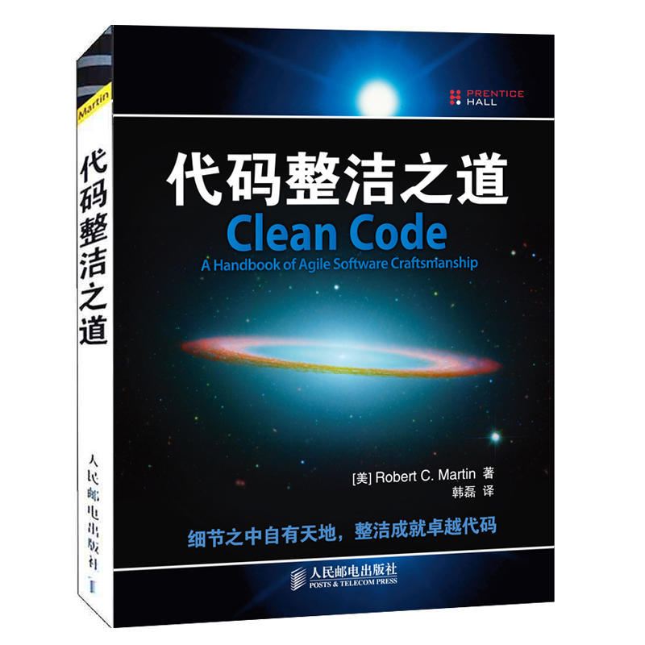
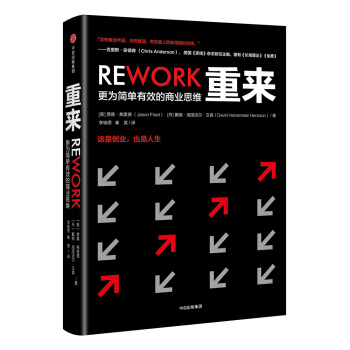

25本最佳编程书籍
1 程序员修炼之道 (The Pragmatic Programmer)

- 作者: David Thomas / Andrew Hunt
需求不清，是程序员面临的真正挑战，高手程序员重新定义了交付软件的价值到底是什么。
每次开发出来的软件交付给用户，它的价值不再只是把实现了某个功能的软件产品交付给用户，它更是探寻用户真实需求的催化剂。
催化剂是什么，它虽然不是我们需要的结果，但它却是促成结果的关键要素。
“完成大于完美”这句话，是程序员务实的体现。它让程序员别把目标放在结果上，只想着结果要完美，更重要的是过程，别光想着要做什么，还要知道怎样才能做到。
高手程序员，不是放弃了完美，而是用更快的速度更少的成本先完成，用真实的产品让用户反馈。
2 代码整洁之道 (Clean Code)

- 作者: Robert C·Martin
代码作为表达工具，需要好的“叙事”方法。有一些模糊的感觉被描述为准确的规则。
好像研一的时候看到计算机系老师的实例代码，我当时的反应是“行云流水”般的。
看到这本书才发现，这种“行云流水”不是随心所欲的发挥，也不是个人性格，而是规则，准确的对细节的规则的准确执行。
“Tell the story of system”。炸烈喜欢！
3 代码大全 (Code Complete)

- 作者: Robert C·Martin
前面一小半有点太过基础，适合初学者；中间关于测试，重构，调试，调优的几章把重点都点到了，但是还是需要去看相关的深入的书；
最后几张代码风格和程序员性格什么的有点凑字数占篇幅的嫌疑……书里有一些箴言和金句，但是必须自己在实际工作中有体会才能共鸣，
不可能出现“本来啥都不懂，看完那些指导就一下子明白了”。
4 重构:改善既有代码的设计 (Refactoring)

- 作者: Martin Fowler
内容组织得完备妥当，写得比较中肯。
但其内容多是容易推导出来的，属于看与不看没有太大所谓的书。
怎么说，纵使有再多技巧，重构终归是体力活，各位注意身体。
5 深入浅出设计模式 (Head First Design Patterns)

设计模式的最佳入门书，对于新手而言，它比四人帮的书要好懂的多。通俗易懂，带来的副作用就是，废话真的不是一般的多。
6) 人月神话 (The Mythical Man-Month)
7) 代码整洁之道: 程序员的职业素养 (The Clean Coder)
8) 修改代码的艺术 (Working Effectively with Legacy Code)
修改代码是每一位软件开发人员的日常工作。开发人员常常面对的现实是，即便是最训练有素的开发团队也会写出混乱的代码，而且系统的腐化程度也会日积月累。
本书是一部里程碑式的著作，针对大型的、无测试的遗留代码基，提供了从头到尾的方案，让你能够更有效地应付它们，将你的遗留代码基改善得具有更高性 能、更多功能、更好的可靠性和可控性。
9) 设计模式 (Design Patterns)
- 客观讲，国内将设计模式的书写得也不错，更符合中国读者的阅读习惯。
- 相关推荐：
- 《大话设计模式》
- 《设计模式之禅》
10) 程序员面试金典 (Cracking the Coding Interview)
- 校招、换工作，刷题必备
- 相关推荐
- 《剑指Offer》
11) 重来 (Rework)
12) 软技能 (Soft Skills)
13) 编码 (Code)
14) 算法导论 (Introduction to Algorithms)
- 每一个程序员都有一颗攻破算法导论的心，大部分最后沦落为有心无力。
- 相关推荐
- 《算法设计手册》
15) 人件 (Peopleware)
16) 编程珠玑 (Programming Pearls)
- 感觉没有很多人吹得那么神，我自己看《编程之美》收获都比该书多。
- 相关推荐
- 《编程之美》
17) 企业应用架构模式 Patterns of Enterprise Application Architecture
- 相关推荐：
- 《大型网站技术架构》李智慧
- 《构建高性能Web站点》郭欣
18) 计算机的构造与解析 (Structure and Interpretation of Computer Programs)
19) 计算机程序设计艺术 (The Art of Computer Programming)
- 久闻大名，但是没看过。
20) 领域驱动设计 (Domain-Driven Design)
21) 编程人生 (Coders at work)
22) 敏捷开发 (Rapid Development)
23) Python编程无师自通—专业程序员的养成 (The Self-Taught Programmer)
24) 算法 (Algorithms)
- 五星推荐，最佳数据结构与算法入门书。